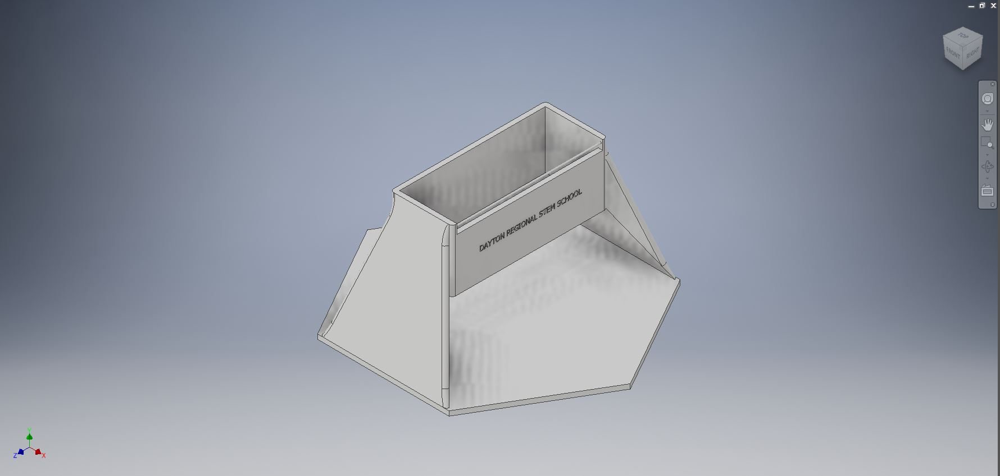
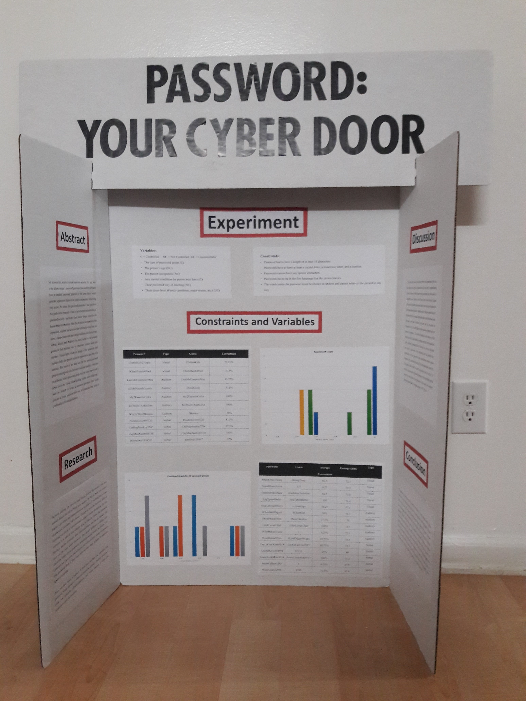
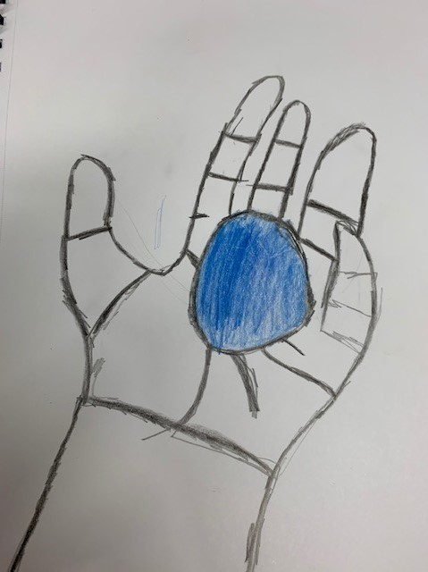

9th Grade Page
5 Paragraph Essay
In the 9th grade, I took various different classes. The classes that I took included Honors Geometry, Honors Engineering Science, Art, Language Arts, Chinese 1, and US History. At the end of my 9th grade school year, we had to create a 5 paragraph essay that explains how we are ready for the 10th grade. In order to do this, we had to choose a class or project that we grew in, alongside a class or project that we struggled in and succeeded in. I will be displaying that essay in this page.
Introduction
At the beginning of the year, I was a student who had a negative attitude. I do not mean that I was mad, but rather I did not have much confidence in myself, and was stressed out constantly because I was trying to meet high expectations I put on to myself. My attitude started to change through projects that helped me grow such as the rap project, projects that made me struggle such as the 3D printing project, and projects that I succeeded in such as the science fair. My change in attitude are also a result of the teachers and the students that I have around me. I have also learned many things, such as how to properly use commas inside of my text, speak in a new language, design for 3-D printing, and I have learned about things that happened to our country in the late 19th century and 20th century. I can say with confidence that I am ready for the 10th because of all of the struggles and growth that I had during my time in the 9th grade.
Struggle
I stated above that there were projects that I succeeded in, projects that I struggled in, and projects that I grew in. A project that I struggled in was the 3D printing project. The 3D printing project was to help us get familiar with 3D printing by getting us to print our own object that would have some use to us. I decided to create a mouse container, which turned into a container for an ad-blocker for my house. There were many requirements to the design. And with a lot of requirements comes a lot of struggles. Most of the requirements I completed with ease but there was one requirement that I struggled a lot in. In the 3D printing project, I was required to create an object with an appealing design. This was hard because the mouse container had to have a rectangular shape in order to fit the mouse and fit in the 3D printer. I tried many design such as a rectangle and a cylinder. These did not work because they were either not appealing or they could not be printed on a 3D printer. During one of Mr.Bottelier;s I learned about the loft tool. Using the loft tool, I was able to overcome the problem that I had and was able to make a shape that was organic and looked appealing. However, this caused another problem. The container was not able to print because there was over hang so the print would not resolve properly. However, after many iteration of changing the shape of the loft so the print would print properly. I was able to change the loft shape so the shape would support the container itself.
Final Draft of my 3D Print
Draft of the body of my 3D Print, would not print because of overhang
Success
A project that I felt like I succeeded in was the science fair. Succeeding in something means feeling good about the result that you get from it, maybe because of what happened in the process or doubts that you had. For me this was science fair. Science fair was a project that all 9th grade honor science student had to do. It spanned a total of about 2 ½ quarters (or about 6 ½ months). The project required us to start with a research question that we would research about, create a creation to answer the question if it was an engineering project or design an experiment to answer the question if it was a science project, and then present our creation or findings with other people in a school science fair. This project was a success for me because of the amount of struggles I had to overcome. The first problem was coming up with a topic. Back in 8th grade, when I signed up for honor’s science. I was told that it was recommended that I think of a topic that I wanted to research for my science fair. However, by the time 9th grade rolled around, I never actually got any ideas. Luckily, I was able to meet with Mr. Bottelier and together we came up with a topic that was unique to me while also being a project that I felt passionate about. This topic turned out to be a password generator that had to be designed for everyday use. My next struggle came during my data-collecting period. What I wanted to do was to collect data on how well people can remember certain types of password. However due to the weather, there were a good amount of Plan E days and there were also some students who were absent which skews the data because different people gave me their passwords at different times which can skew the data. What I had to do was redo my experiment with some other changes in order to make the data as accurate as possible. This experiment was sort of rushed as I didn’t have much time left in order to finish the rest of my project. My last and final struggle was creating the generator itself. At first, I wanted to code my own generator using JavaScript or python. But since time was running out I was not able to learn a new coding language in time, so after talking with Mr. Bottelier, I decided to use scratch to create the password generator. My 1st artifact shows the code for my Scratch program. All it does is clear the lists of variable implemented into the program. Then it adds the variables back into the list. Then it randomly chooses a random number from a list, combine it with a random word. It repeats this process 3 times and then combines all 3 word-number combination to create a 15 character password. Alongside all the struggles, there was the pressure of completing the science fair because this would arguably make up our entire 3rd quarter grade. At the end however, I was able to tie with 2nd place during our school science fair which made me feel very good about myself and made the science fair project the project that I felt like I succeeded the most in.
The code for my password program
My Science Fair TriFold
Growth
My biggest growth for me in my 9th grade school year didn’t come from a project but rather a class. Art had never been a strong suit for me. If you look back at the pre-test that we took at the beginning of the year, you would know what I mean. However, this year, due to art class, I feel as if not only my ability to draw had grown but also my creativity. I had always struggled with creativity. Not because I wasn’t creative but more I just didn’t know how to use my creative side. I always tried to do stuff logically. My first artifact is a picture of a hand that I drew using blind contour line drawing. As you see, you can barely make out the hand. This was because when I was drawing the hand, I was drawing what I made the hand to look out as not the lines that made up the hand. But after practicing blind contour line drawing for 3 weeks. I was able to tell my brain to not draw what I think but what I see. This is evident in my 2nd artifact, which is a drawing of my hand holding a blue ball. As you can see, the hand is very easy to make out. I was also able to draw the individual features of the hand. I also grew in drawing humans. When I drew humans, I usually did not take into account the scale of the human body so sometimes when I drew a human their legs were sometimes too long compared to the rest of the body. This changed after taking this art class, as now I am able to properly scale the human body to look in proportion to an actual human. I also grew a lot in drawing human features especially the eye. Before the 9th grade, I used to draw eyes as circles within circles or just dots. But due to art class making draw a lot of facial features. I really improved on how I would draw an eye and it would closely represent an actual eye. Now if were to look at my post-test and compare it with my pre-test, you would see a huge difference, both in the shapes, details, and shading.
The bad drawing of my hand before contour line drawing
The good drawing of my hand after contour line drawing
Conclusion
Now at the end of the year, I have drastically changed from when I was a 9th grader. My mindset changed from a negative attitude to a more positive attitude. Instead of doubting myself and saying that I cannot do something, I will just do it and have fun while doing it regardless if I fail or not. I no longer have any high expectation of myself but rather I just now have goals that I want to reach. Now I am usually never stressed out because I have learned how to pace myself in whatever it is I am doing and not leaving everything until the last minute. Persistence is the quality that I felt I grew the most in and the quality that I felt helped guide me through this roller coaster known as the 9th grade. In everything, no matter what class, no matter what project, there was always a struggle that came along with it, but because I was able to persist through the struggle to find an answer, I was able to pass the 9th grade. As stated before I feel like now I am ready for anything that 10th grade might throw at me. The science fair has taught me how to overcome all of my struggles and doubt, as well as teaching me how to communicate my thoughts to my peers, my teachers, and to other people. The 3D printing project helped me to use what I learned in class to help me overcome struggles. And art class helped me learn how to use my creative side to find another view in situations and problems. In the 10th grade, I want to further my improvement in all of the other 4 qualities, and I want to keep growing as a young adult so I can be ready for what the world has to offer me.